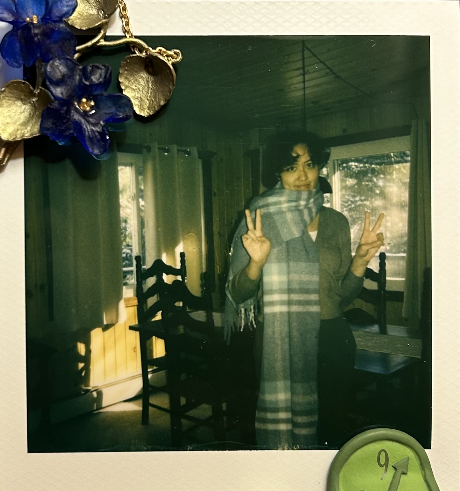

Rachael Prokap
Technical writer | Author | Researcher
Experience
Technical Documentation Intern
Tanium | June 2025 - Present
- Develop Tanium AI Agent integration (details under NDA).
- Write industry-standard technical documentation and UI text for the Tanium Deploy, Patch, Certificate Manager, and Benchmark modules.
- Mitigate support engineer workload with documentation revision to assist users with troubleshooting.
- Provide analytics-backed suggestions and publish updates to the Engineering Writer’s Guide.
Research Assistant
Aresty Research Center | September 2024 – April 2025
- Researched the Rutgers writing centers and curricula; focused on accessibility and perception of AI.
- Conducted literature reviews, field research, extensive surveys, and data analytics through Qualtrics.
- Presented findings at the 2025 Rutgers Undergraduate Research Symposium.
SAT Instructor
Princeton Review | July 2024 - June 2025
- Lead classes of 20+ students in test-taking and study strategies for SAT and college readiness.
- Lectured 3-hour long sessions, adjusting course content to meet dozens of students' needs.
- Created a supportive and academically rigorous environment with significant test score increases.